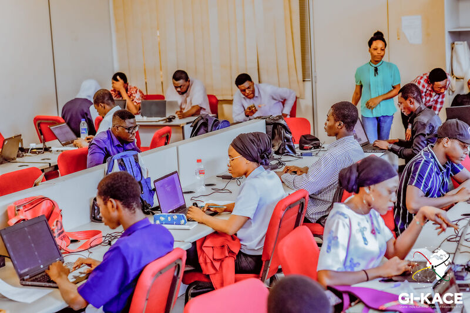
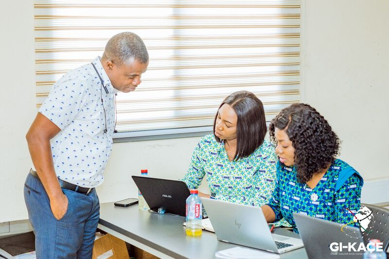

The Ghana-India Kofi Annan Centre of Excellence in ICT(GI-KACE) was established in 2003 as the ICT Capacity Development Agency under the Ministry of Communications and Digitalization, Government of Ghana. It was as a result of the collaboration between the government of Ghana and the Indian government. The institute is Ghana’s first Advanced Information Technology Institute that was charged with the task of stimulating growth in the ICT Sector in ECOWAS. The core aim of the Centre is to promote individual and institutional capacity building; research and innovation; consultancy and advisory services in the area of ICT and E-Governance solutions in Ghana and Africa.
For over 20 years,GI-KACE still boasts of a strong multi-disciplinary team that has a well-established track record of working efficiently in over 10 African countries. Here at GI-KACE, we coordinate and oversee an ICT system that produces globally competitive research and Innovation through quality oriented and demand-driven learning for national development
Industry-standard courses designed to build digital skills for the modern workforce.
Innovative solutions in software, networking, and systems integration for businesses.
Expert advisory services in digital transformation, cybersecurity, and IT management.

